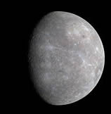
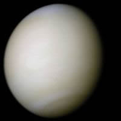

八大行星简介
在我们的宇宙中，太阳系是一个充满奇迹的地方，包含了八大行星和其他天体。每个行星都有其独特的特征和魅力。
水星

水星是离太阳最近的行星，表面温度变化极大，白天可以达到430°C，夜间则降到-180°C。
金星

金星被称为“晨星”或“暮星”，它的表面覆盖着厚厚的云层，温度可高达462°C。
地球
地球是我们居住的星球，拥有适合生存的环境和丰富的水资源，是已知唯一有生命的行星。
火星
火星以其红色的外观而闻名，表面有许多峡谷和火山，是人类探索的主要目标之一。
木星
木星是太阳系中最大的行星，拥有强大的磁场和众多的卫星，其中包括著名的甘尼美德。
土星
土星以其美丽的光环而著称，是一个气体巨行星，拥有超过80颗已知卫星。
天王星
天王星是一颗冰巨行星，以其独特的倾斜轴和蓝绿色外观而闻名。
海王星
海王星是太阳系中最远的行星，以其深蓝色的外观和强烈的风暴而著称。
 在我们的宇宙中，太阳系是一个充满奇迹的地方，包含了八大行星和其他天体。每个行星都有其独特的特征和魅力。
在我们的宇宙中，太阳系是一个充满奇迹的地方，包含了八大行星和其他天体。每个行星都有其独特的特征和魅力。
在我们的宇宙中，太阳系是一个充满奇迹的地方，包含了八大行星和其他天体。每个行星都有其独特的特征和魅力。
在我们的宇宙中，太阳系是一个充满奇迹的地方，包含了八大行星和其他天体。每个行星都有其独特的特征和魅力。